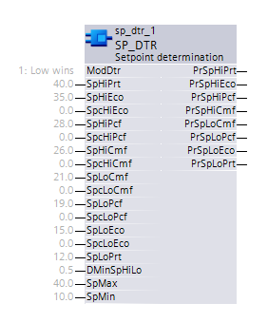

SP_DTR: Setpoint determination
The SP_DTR (FB489) block calculates several setpoints based on selected determination mode.
The SP_DTR block allows central definition of setpoints (for high and low in all operating modes). One or several correction values are used to update the room setpoints.
Functionality
The following functions are integrated in the block:
- Correction for setpoints for Comfort, Pre-Comfort, and Economy (high, low).
- Adjustment of dependent room setpoints based on selected determination model.
The block calculates all present setpoints based on the active setpoint corrections and of a setpoint determination model.
Mode determination [ModDtr]
[ModDtr] determinates method used for calculating the outputs
Mode Determination [ModDtr] | Description |
1 (Low wins) | In this mode the functionality is identical to SP_TR block. |
2 (Last wins) | This mode is similar to "Low wins" and high setpoint is allowed to shift down low setpoint following the last win rule. In case of simultaneous change - low setpoint wins. |
3 (Last wins & independent) | This mode is similar to "Last wins" and the order of low or high setpoints is not fixed (SpLoEco is allowed to be higher than SpLoCmf). All operating mode setpoints are limited within range of SpLoPrt and SpHiPrt, which are limited by SpMin and SpMax. |

Inputs
Pin | E | Description | |
ModDtr | pa | Mode determination | |
| 1 (Low wins) | ||
2 (Last wins) | |||
3 (Last wins & independent) | |||
SpHiPrt | pa | Setpoint high for protection | |
SpHiEco | pa | Setpoint high for economy | |
SpcHiEco | pa | Setpoint correction high for economy | |
SpHiPcf | pa | Setpoint high for pre-comfort | |
SpcHiPcf | pa | Setpoint correction high for pre-comfort | |
SpHiCmf | pa | Setpoint high for comfort | |
SpcHiCmf | pa | Setpoint correction high for comfort | |
SpLoCmf | pa | Setpoint low for comfort | |
SpcLoCmf | pa | Setpoint correction low for comfort | |
SpLoPcf | pa | Setpoint low for pre-comfort | |
SpcLoPcf | pa | Setpoint correction low for pre-comfort | |
SpLoEco | pa | Setpoint low for economy | |
SpcLoEco | pa | Setpoint correction low for economy | |
SpLoPrt | pa | Setpoint low for protection | |
DMinSpHiLo | pa | Delta minimum high-low setpoint | |
SpMax | pa | Maximum setpoint | |
SpMin | pa | Minimum setpoint | |
Outputs
Pin | E | Description |
PrSpHiPrt | a | Present setpoint high for protection |
PrSpHiEco | a | Present setpoint high for economy |
PrSpHiPcf | a | Present setpoint high for pre-comfort |
PrSpHiCmf | a | Present setpoint high for comfort |
PrSpLoCmf | a | Present setpoint low for comfort |
PrSpLoPcf | a | Present setpoint low for pre-comfort |
PrSpLoEco | a | Present setpoint low for economy |
PrSpLoPrt | a | Present setpoint low for protection |
Input values
Pin | Description | Data Type | Default value | E.g. Engineering unit or Text group | Min. | Max. |
ModDtr | Mode determination | Int | 1 (Low wins) | Low wins, Last wins, Last wins & independent | 1 | 3 |
SpHiPrt | Setp.high for protection | Real | 40.0 | °C | 0.0 | 50.0 |
104.0 | °F | 32.0 | 122.0 | |||
SpHiEco | Setp.high for economy | Real | 35.0 | °C | 0.0 | 50.0 |
95.0 | °F | 32.0 | 122.0 | |||
SpcHiEco | Setp.corr.high for economy | Real | 0.0 | K | -10.0 | 10.0 |
0.0 | °F | -36.0 | 36.0 | |||
SpHiPcf | Setp.high for pre-comfort | Real | 28.0 | °C | 0.0 | 50.0 |
82.0 | °F | 32.0 | 122.0 | |||
SpcHiPcf | Setp.corr.high for pre-comfort | Real | 0.0 | K | -10.0 | 10.0 |
0.0 | °F | -36.0 | 36.0 | |||
SpHiCmf | Setp.high for comfort | Real | 26.0 | °C | 0.0 | 50.0 |
79.0 | °F | 32.0 | 122.0 | |||
SpcHiCmf | Setp.corr.high for comfort | Real | 0.0 | K | -10.0 | 10.0 |
0.0 | °F | -36.0 | 36.0 | |||
SpLoCmf | Setp.low for comfort | Real | 21.0 | °C | 0.0 | 50.0 |
70.0 | °F | 32.0 | 122.0 | |||
SpcLoCmf | Setp.corr.low for comfort | Real | 0.0 | K | -10.0 | 10.0 |
0.0 | °F | -36.0 | 36.0 | |||
SpLoPcf | Setp.low for pre-comfort | Real | 19.0 | °C | 0.0 | 50.0 |
66.0 | °F | 32.0 | 122.0 | |||
SpcLoPcf | Setp.corr.low for pre-comfort | Real | 0.0 | K | -10.0 | 10.0 |
0.0 | °F | -36.0 | 36.0 | |||
SpLoEco | Setp.low for economy | Real | 15.0 | °C | 0.0 | 50.0 |
59.0 | °F | 32.0 | 122.0 | |||
SpcLoEco | Setp.corr.low for economy | Real | 0.0 | K | -10.0 | 10.0 |
0.0 | °F | -36.0 | 36.0 | |||
SpLoPrt | Setp.low for protection | Real | 12.0 | °C | 0.0 | 50.0 |
54.0 | °F | 32.0 | 122.0 | |||
DMinSpHiLo | Delta minimum high-low setpoint | Real | 0.5 | K | 0.0 | 10.0 |
1.0 | °F | 0.0 | 18.0 | |||
SpMax | Maximum setpoint | Real | 40.0 | °C | 0.0 | 50.0 |
104.0 | °F | 32.0 | 122.0 | |||
SpMin | Minimum setpoint | Real | 10.0 | °C | 0.0 | 50.0 |
50.0 | °F | 32.0 | 122.0 |
Output values
Pin | Description | Data Type | Default value | E.g. Engineering unit or Text group | Min. | Max. |
PrSpHiPrt | Pres.setp.high for protection | Real | 0.0 | °C | 0.0 | 50.0 |
0.0 | °F | 0.0 | 122.0 | |||
PrSpHiEco | Pres.setp.high for economy | Real | 0.0 | °C | 0.0 | 50.0 |
0.0 | °F | 0.0 | 122.0 | |||
PrSpHiPcf | Pres.setp.high for pre-comfort | Real | 0.0 | °C | 0.0 | 50.0 |
0.0 | °F | 0.0 | 122.0 | |||
PrSpHiCmf | Pres.setp.high for comfort | Real | 0.0 | °C | 0.0 | 50.0 |
0.0 | °F | 0.0 | 122.0 | |||
PrSpLoCmf | Pres.setp.low for comfort | Real | 0.0 | °C | 0.0 | 50.0 |
0.0 | °F | 0.0 | 122.0 | |||
PrSpLoPcf | Pres.setp.low for pre-comfort | Real | 0.0 | °C | 0.0 | 50.0 |
0.0 | °F | 0.0 | 122.0 | |||
PrSpLoEco | Pres.setp.low for economy | Real | 0.0 | °C | 0.0 | 50.0 |
0.0 | °F | 0.0 | 122.0 | |||
PrSpLoPrt | Pres.setp.low for protection | Real | 0.0 | °C | 0.0 | 50.0 |
0.0 | °F | 0.0 | 122.0 |
Engineering
Interconnection sample for summer/winter compensation and room operator unit with knob
Application
Summer/winter compensation
The setpoint correction for summer/winter compensation can be interconnected directly.
Room operator unit with knob
A room operator unit with knob can be interconnected directly.
Process response
Standard (see General rules and information).
Troubleshooting
Standard (see General rules and information).